User Guide: how to choose sounds in the admin panel, and how visitors listen and download them
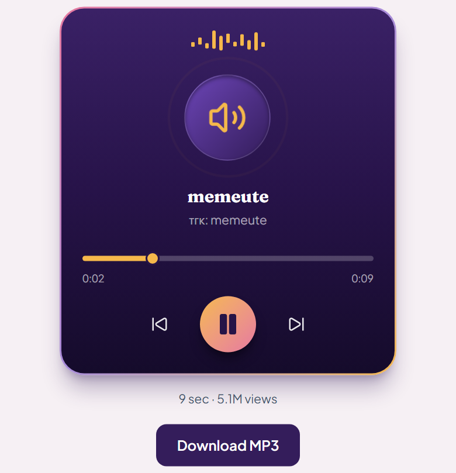
Version 1.0 · November 2026For the website owner and admin team
Contents
Part
What you will learn
Welcome
What Trending Sounds is, how it works in 3 steps, and a 5-minute quick start.
Part 1
The admin panel. Where to find the sounds, what the top box and the filter do, how to read the list, how to listen before you choose, how to Approve, Reject and Undo, how to handle a report from a visitor, and a short daily routine.
Part 2
What visitors see. Where sounds appear on your website (menu, home page, list page), the sound page with its player, how visitors download an MP3, and how they can report a sound.
Part 3
Questions and answers for the most common situations, and a one-page quick reference of every button.
Words used in this guide
Word
What it means
Sound
A short piece of audio, for example a funny voice, a dialogue or a sound effect.
Admin panel
The private control area of your website. Only you and your team can open it.
Collector
The part of the website that finds trending sounds automatically.
Filter
A set of rules that hides sounds you probably do not want (for example songs). Hidden sounds are never deleted.
Approve
You say “yes, publish this sound”. It then appears on the website.
Reject
You say “no”. The sound is hidden from the website and from your main list.
MP3
The audio file that visitors download. It works on every phone and computer.
Visitor
A person who opens your website. They cannot see the admin panel.
Tip Keep this guide open the first few times. After a day or two you will not need it: the whole job takes about 2 to 3 minutes a day.
Pictures The pictures use sample sounds. The names and numbers on your own screen will be different. Red numbers like 1 on a picture match the numbers in the text next to it.
Welcome
Trending Sounds is a feature of your website. Every day it finds funny sounds that many people are using in TikTok videos. You look at the list, choose the ones you like, and your visitors can then listen to them and download them as free MP3 files.
You do not need any technical knowledge. This guide shows every screen with pictures and tells you exactly what to click.
How it works: 3 simple steps
1
Collect
The website looks for trending sounds by itself, 4 times every day. You do nothing.
➤
2
Review
You open the admin panel, check the sounds, and press Approve or Reject.
➤
3
Publish
Approved sounds appear on your website. Visitors listen and download.
Important Nothing goes on your website until you approve it. The website never publishes a sound on its own.
Quick start (5 minutes)
Log in to your admin panel and click Trending Sounds in the left menu.
Look at the list of sounds. It shows Passed the filter by default.
Click Sound next to a name to listen to it on TikTok.
Press the green Approve button on the sounds you like.
Wait a few seconds until you see MP3 saved under the sound.
Open your website and click Sounds in the top menu. Your sound is there.
What you need
A computer, tablet or phone with internet.
Your admin login (the same one you use for the blog and other admin pages).
About 2 to 3 minutes a day.
1
The admin panel
Where you choose the sounds
1.1 Open the Trending Sounds page
Open your website address and add /admin at the end.
Log in with your admin email and password.
In the menu on the left, click Trending Sounds1.
Tip You can also click Messages & Inquiries in the same menu to read reports from visitors (see section 1.8).
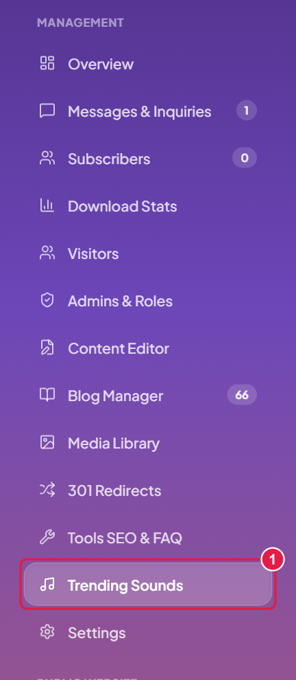
Figure 1. The left menu of the admin panel
1.2 The top box
The first box on the page tells you if the automatic search is working.
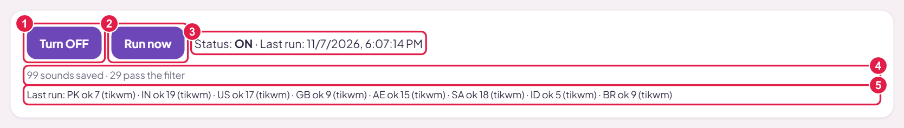
Figure 2. The top box
1Turn OFF / Turn ON. Stops or starts the automatic search. Leave it ON.
2Run now. Searches for new sounds right now. It takes 1 to 2 minutes. You normally do not need it, because the website searches by itself 4 times a day (about every 6 hours).
3Status and Last run. “Status: ON” means it is working. “Last run” is the date and time of the last search. It should be recent (within about 6 hours).
4Counts. “99 sounds saved” is everything found so far. “29 pass the filter” is how many match your rules.
5Result for each country. The website checks 8 countries: PK (Pakistan), IN (India), US (USA), GB (United Kingdom), AE (UAE), SA (Saudi Arabia), ID (Indonesia), BR (Brazil). “ok 7” means 7 sounds were found there.
Good to know Sometimes one country says “failed”. This is normal. The next search tries again. If a red message says the last run failed in every country, do nothing: the website tries again by itself after about 45 minutes and keeps all your old sounds.
1.3 The filter
The filter is your assistant. It hides sounds that are probably not what you want, so your list stays short and good.
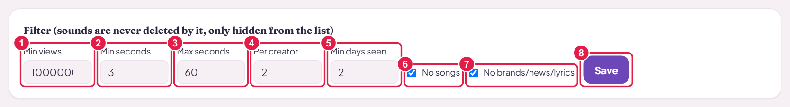
Figure 3. The filter box
Setting
What it does
Normal
1Min views
A sound must have at least this many views on its most popular video.
1,000,000
2Min seconds
Hides sounds shorter than this.
3
3Max seconds
Hides sounds longer than this.
60
4Per creator
Shows at most this many sounds from the same creator, so one person does not fill your list.
2
5Min days seen
A sound must have been seen on at least this many different days. This keeps out sounds that were popular for only one day.
2
6No songs
When ticked, hides music tracks.
ticked
7No brands/news/lyrics
When ticked, hides company and brand sounds, news channels, song-lyrics pages, religious recitation, and famous people.
ticked
8Save
Press this after you change anything. Your list updates at once.
Safe to use The filter never deletes a sound. It only hides it from your main list. You can always see hidden sounds again (section 1.4).
Tip If your list is empty or very short, change Min days seen to 1 and press Save. You will then see every sound that matches your other rules, even those found only today. When you have more sounds, you can set it back to 2.
1.4 Choose which list to see
Above the table there is a menu with five choices. It decides which sounds the table shows.
Choice
What you see
Passed the filter
The main list: sounds that match your rules and are waiting for your decision, plus the ones you approved. This is where you work.
Approved
The sounds you approved. These are on your website.
Rejected
The sounds you rejected.
Filtered out
Sounds hidden by the filter. Look here if a sound you expected is missing. The Filter column tells you why it was hidden.
All
Everything, in one list.
Each list shows the best 300 sounds, highest score first.
1.5 How to read the list
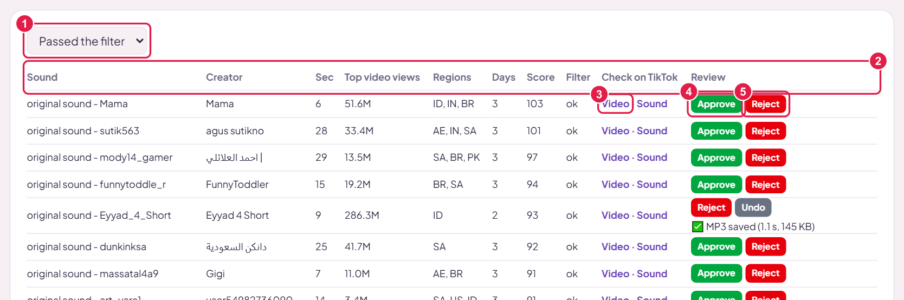
Figure 4. The list of sounds
1List chooser. Chooses which sounds the table shows (section 1.4).
2Column titles. Explained in the table below.
3Video · Sound. Two links to check the sound on TikTok (section 1.6).
4Approve. Puts the sound on your website.
5Reject. Hides the sound.
Column
What it tells you
Sound
The name of the sound on TikTok. Many start with “original sound -” followed by the creator’s account name.
Creator
The person who made it.
Sec
How long it is, in seconds.
Top video views
Views of the most popular video that uses this sound. (“1.2M” means 1.2 million.)
Regions
The countries where the sound was found. More countries is better.
Days
On how many different days it was found. More days means a real trend.
Score
A number that combines views, countries and days. The list is sorted by it: the best sounds are at the top.
Filter
“ok” means it passed your rules. Otherwise it shows the reason it was hidden (see below).
Check on TikTok
The Video and Sound links.
Review
The buttons Approve, Reject and Undo.
Tip The best sign of a real trend is a sound that has many countries and many days, not just a very big number of views.
Reasons shown in the Filter column (in the “Filtered out” list):
low views
Fewer views than your Min views.
too short / too long
Outside your Min / Max seconds.
few days
Seen on fewer days than your Min days seen.
music
Looks like a song.
junk word
The name looks like a brand, news, lyrics, religious or famous-person sound.
duplicate / same creator
Another copy of the same sound, or too many from one creator.
bad name / no creator
The name or creator is empty or unreadable.
1.6 Listen before you choose
You cannot judge a sound by its name, so listen to it first. It takes a few seconds.
Click Sound in the Check on TikTok column. The TikTok page of that sound opens. Press play and listen.
Click Video if you also want to watch the most popular video that uses it.
Come back to the admin panel and press Approve or Reject.
How to decide
Good to approve
Funny voices and short dialogues
Meme sounds that people repeat
Funny sound effects
AI-voice jokes
Clear, short sounds that people would like to download
Better to reject
Songs and music, even short parts
Advertisements and brand sounds
News and politics, or the voice of a famous person
Religious recitation
Clips cut from films, dramas or someone else’s work
Bad language, or just noise with no clear voice
Copyright A sound can belong to someone else, even when it is a famous meme. If you are not sure, press Reject. If an owner complains later, you can remove the sound at any time (section 1.8).
Tip You do not have to decide on every sound. Approve only the ones you like. The others can wait in the list.
1.7 Approve, Reject and Undo
Button
What it does
Approve
Publishes the sound. The website saves the MP3 file, and after a few seconds the sound is on your website.
Reject
Hides the sound from your website and from your main list. You can find it later under Rejected.
Undo
Takes your decision back. The sound goes back to “not decided”. If it was approved, it disappears from the website.
What happens when you press Approve
The row changes at once: you now see Reject and Undo, and the words ⏳ Saving MP3…
After a few seconds it changes by itself to ✅ MP3 saved, with the time it took and the file size. Now the sound is live. You do not need to refresh the page.
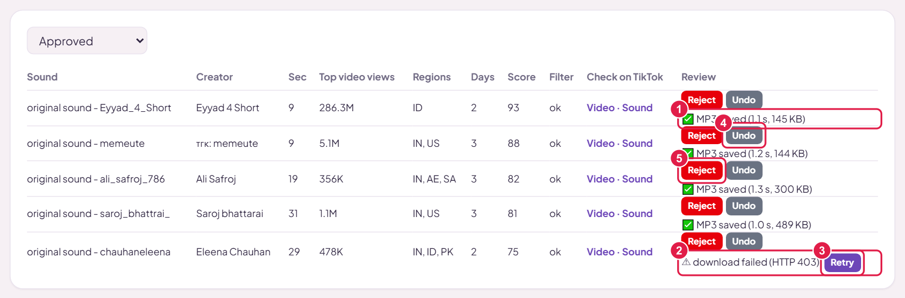
Figure 5. The Approved list
1MP3 saved. The sound is ready and live. (Here it took 1.1 seconds and the file is 145 KB.)
2Warning. The file could not be saved this time (for example “download failed”).
3Retry. Press it to try again. If it keeps failing, wait: the website also retries by itself after every automatic search.
4Undo. Takes the sound off the website.
5Reject. Takes the sound off the website and moves it to Rejected.
The Rejected list
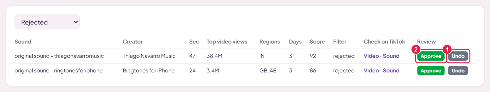
Figure 6. The Rejected list
1Undo. Moves the sound back to “not decided”.
2Approve. Changed your mind? Approve it straight from here.
Good to know Sounds you approved always stay in your Approved list, even if the filter would hide them. Sounds you rejected never come back by themselves. Changes appear on your website within a few minutes.
1.8 Reports from visitors
Every sound page has a link Report this sound, and the website footer has Report Content. When a visitor sends a report, it arrives in your admin panel.
A small number 1 appears next to Messages & Inquiries in the left menu (Figure 7). Click it.
Find the message whose label starts with Sound report (1 in Figure 8).
Read what the visitor wrote (2 in Figure 8): the sound link, the reason and the details.
Figure 7. New message
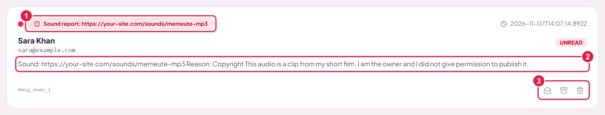
Figure 8. A sound report in Messages
1The label. Shows it is a sound report and which sound.
2The report. The sound link, the reason (for example Copyright) and the visitor’s details.
3Buttons. Mark as read, archive, or delete the message.
What to do
Open the sound link and listen to the sound.
If the report is right: go to Trending Sounds, choose Approved in the list chooser, find the sound and press Reject. It leaves your website within a few minutes.
Write back to the visitor by email. The website promises that a valid report is handled within 24 to 48 hours.
Mark the message as read, or archive it.
Important Nothing is removed automatically. Only you can remove a sound. This also protects you from false reports.
1.9 Your daily routine (2 to 3 minutes)
Open Trending Sounds. Check that Last run is recent.
Look at the new sounds in Passed the filter. The best ones are at the top.
Click Sound to listen to the ones you like. Press Approve on the good ones.
Wait until each approved sound shows MP3 saved.
Open Messages & Inquiries and check for a new Sound report.
Once a week, open the Sounds page of your website and check that everything looks good.
2
What visitors see
Where sounds appear on your website and how people download them
2.1 Where visitors find the sounds
Approved sounds appear in three places on your website.
The top menu
A Sounds link 1 in the top menu takes visitors to the list of all sounds. On a phone, it is in the menu opened with the three-line button.
Figure 9. The Sounds link in the menu
The home page
The section Trending Meme Sounds is on the home page, just above “Free Online Tools”. It shows your 4 most viewed approved sounds. It appears only when at least one sound is approved.
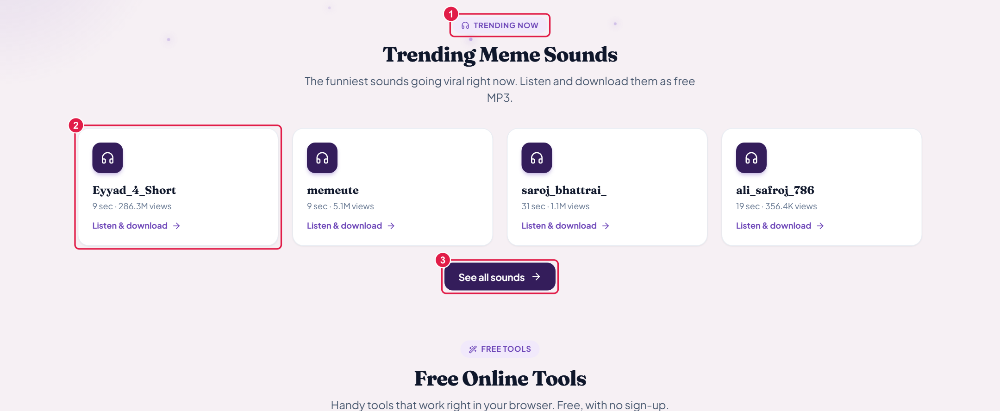
Figure 10. The home page section
1“Trending now” label and the heading of the section.
2A sound card. Click it to open the sound page.
3See all sounds. Opens the full list.
The Sounds page
This page lists every approved sound, with the most viewed first.
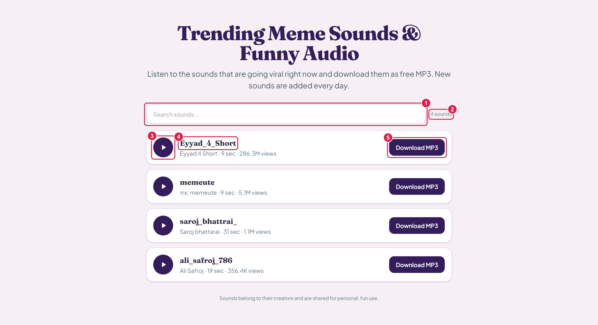
Figure 11. The Sounds page
1Search box. Type a word to find a sound.
2Counter. How many sounds match.
3Play button. Plays the sound right here. Only one sound plays at a time.
4Sound name. Click it to open the sound’s own page.
5Download MP3. Saves the file to the visitor’s phone or computer.
Good to know A sound appears here only after you approved it and its MP3 shows “MP3 saved” in the admin panel.
2.2 The sound page
Every approved sound has its own page. It has a music player in the website’s colours. The speaker in the middle vibrates lightly while the sound plays.
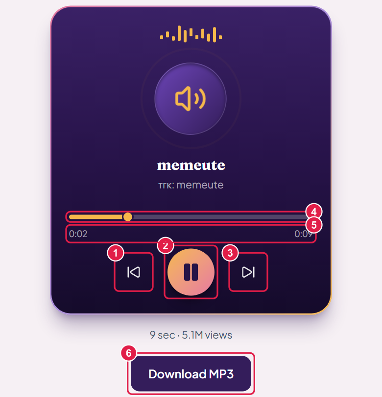
Figure 12. The player
1Previous. Opens the sound before this one in the list.
2Play / Pause. Starts or stops the sound.
3Next. Opens the next sound in the list.
4Progress bar. Shows how far the sound has played. Tap or drag it to jump forward or back.
5Time. On the left, how long it has played. On the right, the full length.
6Download MP3. Saves the sound as a file. It is free, with no sign-up.
Under the player, visitors also see the length of the sound and the number of views.
Under the player
The page also has a short text about the sound, an answer to common questions, and a list of other sounds.
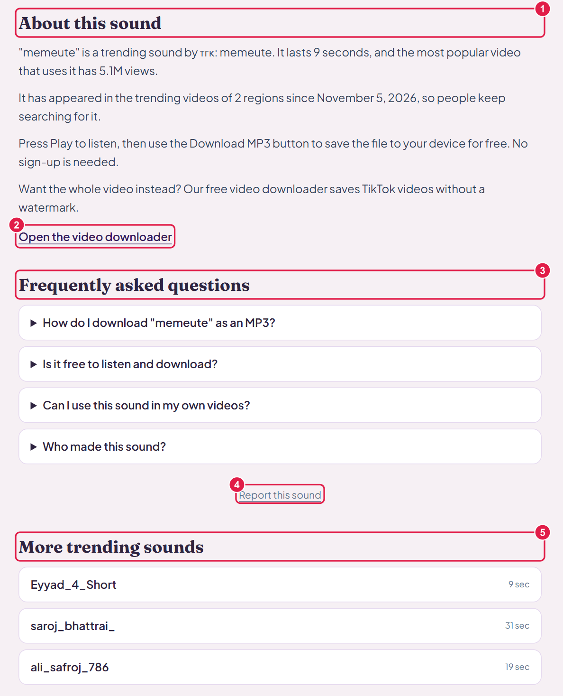
Figure 13. The rest of the sound page
1About this sound. A short text written automatically from the sound’s real details: its length, views, and since when it is trending.
2Open the video downloader. Takes visitors to your video downloader on the home page.
3Frequently asked questions. Four short answers, for example “How do I download it as an MP3?”.
4Report this sound. Opens the report form (section 2.4).
5More trending sounds. Links to other sounds.
2.3 How a visitor downloads an MP3
Open your website and click Sounds in the menu (or click a sound on the home page).
Press the round play button to listen.
Press Download MP3, on the list or on the sound page.
The file is saved. On a computer it goes to the Downloads folder. On a phone, look in Downloads or in the Files app.
Open the file with any music or audio app. It also works as a ringtone or in a video editor.
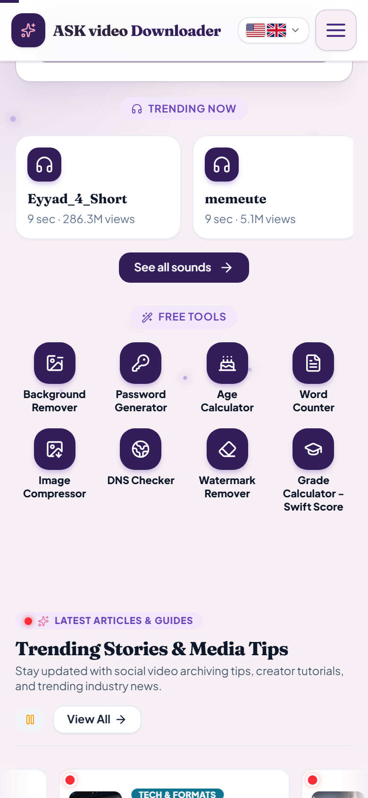
Figure 14. On a phone: the home page
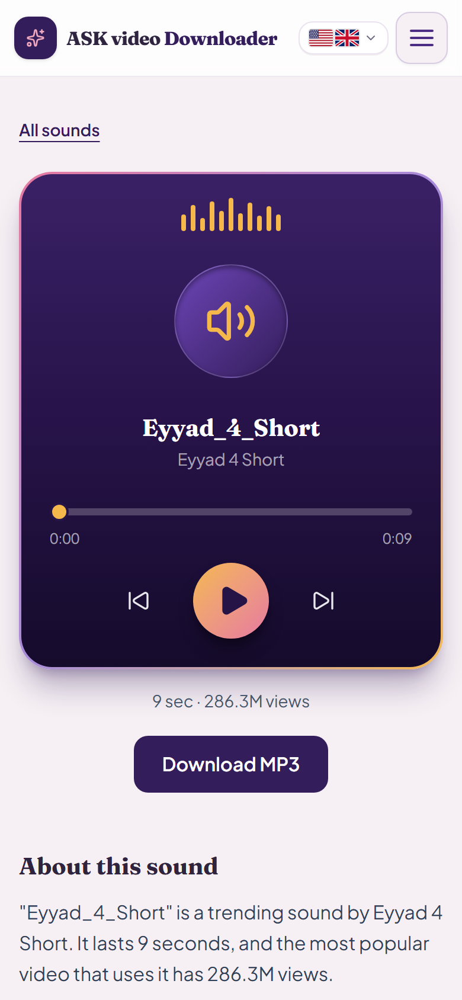
Figure 15. On a phone: the sound page
2.4 Report Content
If someone thinks a sound should not be on your website (for example it uses their work), they can tell you. There are two ways to reach the form:
the Report this sound link on every sound page (the sound link is filled in for them), or
the Report Content link 1 at the bottom of every page of your website.
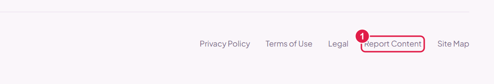
Figure 16. The Report Content link in the website footer
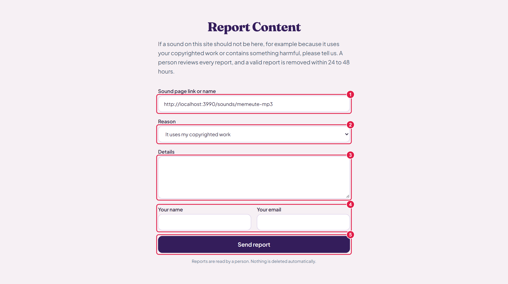
Figure 17. The report form
1Sound link or name. The visitor writes which sound (filled in automatically from a sound page).
2Reason. Copyright, harmful or offensive, their voice or private information, or other.
3Details. What is wrong, and who owns the sound.
4Name and email. So you can answer.
5Send report. The report arrives in your admin panel (section 1.8).
Good to know A visitor can only send a report. They can never remove a sound. A person (you) reads every report, and nothing is deleted automatically.
3
Questions and answers
The most common situations
Question
Answer
I approved a sound but I cannot see it on the website.
Open the Approved list. Under the sound it must say MP3 saved. If it says “Saving MP3…”, wait a few seconds. If there is a warning, press Retry. After that, wait a few minutes: the website refreshes its list about every 5 minutes.
My list is empty or very short.
Most likely Min days seen is 2 and the sounds are new. Change it to 1 and press Save, or wait a day or two. Also check that the list chooser says Passed the filter.
How often does the website look for new sounds?
4 times a day, by itself. Press Run now to look right away.
“Last run” is old. What do I do?
Press Run now. If the status says OFF, press Turn ON.
A famous sound is missing from my list.
The filter may have hidden it. Choose Filtered out in the list chooser and read the Filter column to see why.
How do I remove a sound from the website?
Press Reject (or Undo). It leaves the website within a few minutes.
Can visitors see sounds that I did not approve?
No. Only approved sounds with a saved MP3 are shown.
A sound has huge views. Is it new?
Not always. “Top video views” counts one very popular video, which may be old. Look at Days and Regions: many days and many countries means it is really trending now.
How many sounds should I approve?
Start with 5 to 10 good ones. Then add a few every day. Quality is more important than quantity.
Will the sounds appear in Google search?
Not yet. For now the sound pages are kept out of Google search, because your website is still on a test address. When the final website address is ready, they can be switched on. Ask your developer at that time.
Do I need to refresh the admin page?
No. After you press Approve, the page updates by itself.
Quick reference
Where is what?
I want to…
Go to…
Choose sounds
Admin panel → Trending Sounds
Read reports from visitors
Admin panel → Messages & Inquiries
See all sounds as a visitor
Website → Sounds in the top menu
See the home page section
Website home page, above Free Online Tools
Open the report form
Website footer → Report Content
All buttons
Button
Where
What it does
Turn OFF / ON
Top box
Stops or starts the automatic search.
Run now
Top box
Looks for new sounds right now.
Save
Filter box
Saves your filter settings.
Video · Sound
List
Opens the video or the sound on TikTok so you can check it.
Approve
List
Publishes the sound on the website.
Reject
List
Hides the sound.
Undo
List
Takes your decision back.
Retry
Approved list
Tries to save the MP3 again.
Download MP3
Website
Visitors save the sound as a file.
Remember Nothing is published until you press Approve. Nothing is deleted without you. When in doubt, press Reject: you can always change your mind.
ASK video Downloader · Trending Sounds User Guide · Version 1.0 · November 2026